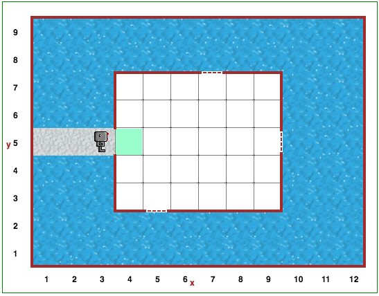

Atidarykite Robotuko pasaulio 15 lygį.
Smarkiai lyja. Vanduo pateks pro atvirus langus, jei Robotukas laiku jų neuždarys. Atviri langai atrodo taip:

Paveskite Robotukui vaikščioti po kambarį ir uždaryti langus naudojant funkciją statyti_sieną().
Kambario dydis ir langų vieta visada keičiasi.
Lygis 14: RaktažodisDėmesio
Kadangi kiekvieną kartą langai yra skirtingose vietose, įsitikinkite, kad jūsų sprendime nėra nurodyta tikslaus žingsnių skaičiaus, kad patektumėte iki lango. Vietoj to, vaikščiodamas po namo vidų, Reeborgas turi patikrinti, ar šalio jo yra atviras langas.
.
not (ne)
Turinys
Lygis 16: Pseudokodas